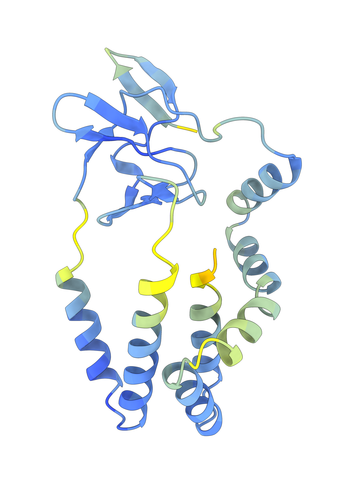

Grove Lab Research
AI-Enabled Discovery

Artificial intelligence is revolutionising molecular virology, enabling us to predict viral protein structures, infer evolutionary relationships, and identify novel targets for vaccines or therapies. Our AI-driven research includes:
- Viro3D: A comprehensive database of virus protein structure predictions. >4,400 human and animal viruses, >85,000 structural models predicted using AlphaFold and ESMFold.
- A structural perspective on evolution: Mapping glycoprotein structures to reveal deep evolutionary relationships and novel fusion mechanisms.
- Revealing mechanism: Using predicted structures to investigate protein function, helping to characterize viral proteins with previously unknown mechanisms.
Good-old-fashioned Experimental Virology

Experimental virology grounds our computational predictions in real-world biology. We apply a range of classical virological techniques to explore viral entry, host interactions, and evolution. Our investigations focus on:
- Evolution and Adaptation: Exploring how viral proteins evolve to adapt to host and evade immune responses, and how this relates to glycoprotein structure and function.
- Fundamentals of Virus Entry: Investigating how the structure and dynamics of viral glycoproteins relate to receptor interactions and function.